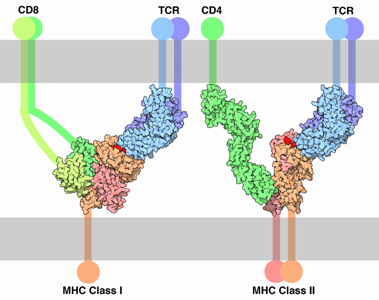

T-Cell
* Định nghĩa:
+ Tế bào limpho T

Hình: Mô hình phân tử mô tả T cell kết hợp với MHC loại I và II
+ Có các loại tế bào T như sau:
- Helper T cells: có biệt danh là "middlemen" adaptive. Một khi nó được kích hoạt sẽ phân chia nhanh chóng và tiết ra ít protein được gọi là cytokine để điều chỉnh hoặc hỗ trợ cho đáp ứng miễn dịch.
- Cytotoxic T cells (Tc cells): có nhiệm vụ hủy những tế bào nhiễm trùng và những tế bào u cũng như trong đào thải ghép. Loại tế bào này được biết như CD8+ T cells.
- Memory T cells: là một dạng tế bào đặc biệt kháng nguyên có thể tồn tại nhiều ngày sau khi nhiễm trùng đã được điều trị. Bao gồm 2 phân loại: central memory T cells (TCM cells) và Effector memory T cells (TEM cells).
- Regulatory T cells (Treg cells): có hai dạng chính được mô tả là Treg (CD4+CD25+FoxP3+) xảy ra tự nhiên và Treg điều chỉnh.
- Narural Killer T cells (NKT cells): là một loại đặc biệt của lymphocyte đóng vai trò cầu nối giữa hệ miễn dịch điều chỉnh và hệ miễn dịch bẩm sinh.
- γδ T cells: Loại chính của tế bào này là một TCR chứa hai chuỗi glycoprotein được gọi là chuỗi α và β.